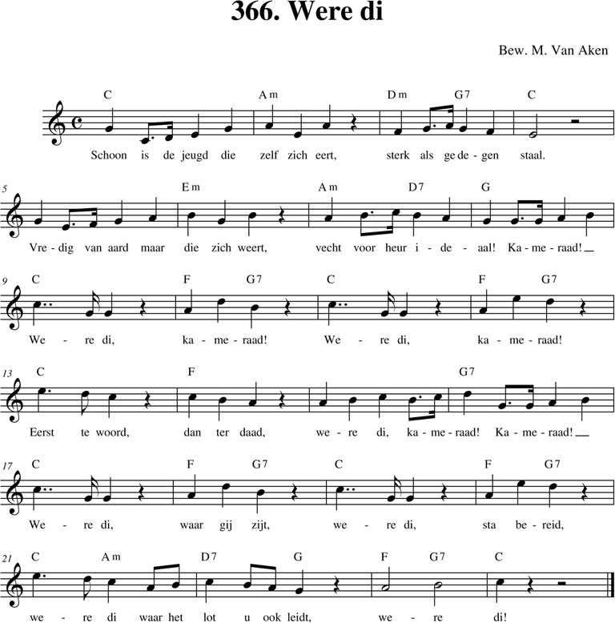
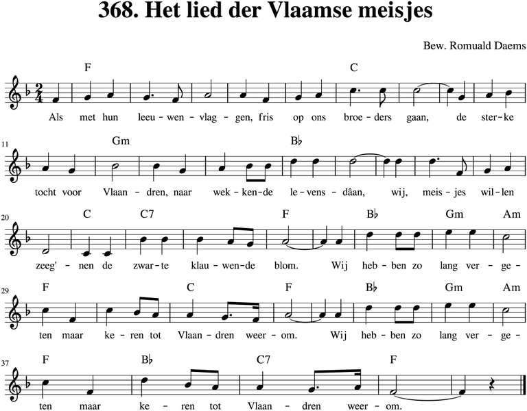
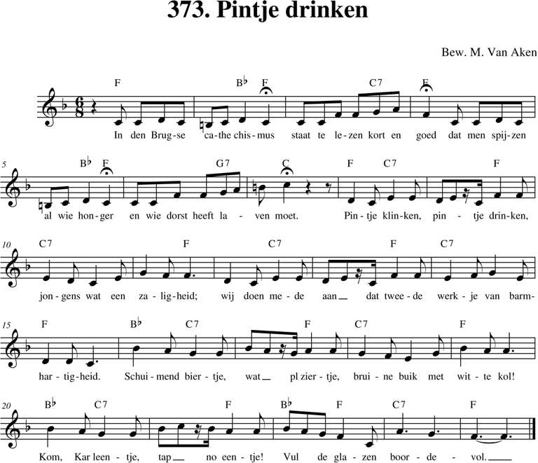
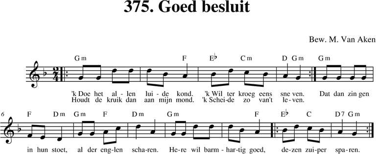

Menu
Bladeren
Alle liederen
p. 1-99
p. 100-199
p. 200-299
p. 300-399
p. 400-499
p. 500 e.v.
Taal
Nederlands
Frans
Engels
Duits
Latijn
Zuid-Afrikaans
Personen
Albrecht Rodenbach
Armand Preud'homme
Emiel Hullebroeck
Eugeen De Ridder
Jozef Simons
Philipp Silcher
René De Clercq
Stephen Foster
Meer...
Thema
Clubliederen
Ceremonies
Studentenleven
Historiek
Volk en land
Verleden
Bezinning
Were di
Pintjedrinken
Minne
Stemming en luim
NIEUWS
taal
Nederlands
(185)

366. Were di
12/12/2018

368. Het lied der Vlaamse meisjes
10/03/2019
369. Omdat ik Vlaming ben
12/12/2018
372. Minnedrank
30/12/2018

373. Pintje drinken
12/12/2018
374. Cantilena Potatoria
12/12/2018

375. Goed besluit
30/12/2018
377. Deftig drinklied
09/03/2019
379. Het zwartbruine bier
12/12/2018
379. Tsjechisch Drinklied
12/12/2018
380. Geneverlied
30/12/2018
Vorige
Volgende